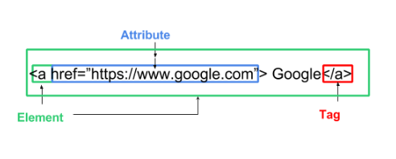

Lesson 1
A Little History
Web development has come an extremely long way in a phenomenally short time. In the beginning times if you wanted to build a website, you just had to know HTML. Forms and the like required a little bit of PHP or--if you were feeling particularly adventurous--JavaScript. As time has moved on, however, it's gotten incredibly complex with the introduction of derivative languages like XML and XHTML, an ever expansive and maturing JavaScript, and a whole host of 'new' backend improvements in languages like Python, Ruby, Perl, etc. that enhance server side support for developers. Not to mention the multitude of different devices, platforms, and mediums that web designers and developers are responsible for these days.
With complexity brings new tools to help make the complex a bit more simple and, consequently, you have a whole host of point-and-click environments out there where you simply drag-and-drop elements onto a canvas while the environment does all the programming for you behind the scenes. Companies like Wix, Weebly, and SquareSpace have built business models on these tools and content management systems like WordPress have helped make the unmanageable manageable for the masses.
Should you choose to go down this road of web development there is a very good chance that a huge bit of your work will be using these tools (e.g. installing WordPress themes, or dragging an ecommerce component into an existing site, credit card validation, etc.) and there's nothing wrong with that. You can build boilerplate sites and such all the live long day and probably make a pretty good living at it in most places.
But there is more out there, should you go looking. A lot more.
Now understand that I'm not trying to dissuade you from using these tools. Quite the contrary as some are quite powerful and why reinvent the wheel every time you need to move something, right?
I encourage you to use them, but use them for what they are--tools. Use them to better understand your fundamentals, use them to better understand what's going on behind the scenes, use them to build something neat, and then deconstruct it bit by bit to better understand function and design. Don't just use them to use them.
What are HTML and CSS?
HTML and CSS are the PB & J of web development. HTML is the structure and CSS is the styling. The two languages compliment each other, but should be considered independent of one another. HTML is for content; CSS is for appearance of that content.
I'm going to take just a second for some clarification, okay? We're going to be working with HTML5, which is the current standard. We're not even going to really talk about any of the previous versions except to mention that there were, in fact, previous versions. The terminology you'll learn, the best practices you will...practice, etc. etc. are all going to be in the context of the current standard. I mention this only because there is a very good chance that in the course of your career--should you choose web design or development as a career--that you'll run across older code written in legacy standards. That's fine as it's close enough semantically--in most cases--that you'll have little trouble figuring it out. I just feel that there is way too much to cover and generally not enough time to cover it already without having to spend the time going over older standards that you will most certainly not use in any of your own original work. I don't need to know the specifics of how an old Commodore 64 works to use my laptop--if that makes any sense.
Much like your bones provide structure to the meat puppet you are or how the foundations of a house provide structure to build your dream home on, HTML is the language you use to build the structure of a site. HTML (Hypertext Markup Language) gives content structure and meaning by grouping and defining that content as elements like headings, paragraphs, tables, or images. Without these definitions content on the internet would be a stylistic and logistical mess.
Let's take a closer look at HTML first.
<!DOCTYPE html> <html lang="en"> <head> <meta charset="utf-8"> <title>Hello World</title> </head> <body> <h1>Hello World</h1> <p>This is a web page.</p> </body> </html>
This is HTML. You have a <head> element--presumably at the top of the page that has a title.
You have a <body> element with the content of the page.
And you have various other elements like <h1> and <p> that label text content like headers and paragraphs.
Our Mother Tongue
As we move through the landscape there will be a ton of terminology that you will encounter. Familiarity breeds comfort and this is no exception. Starting out let's just focus on three, yeah?
- Tags
- Elements
- Attributes
Tags
This is where it gets a bit confusing for some, but stick with it and it'll all make sense in the end. I promise.
Looking at some of the code above, you may have noticed a few things. The first thing is that there are an awful lot of brackets going on up there, right? Structure is defined using elements, which we'll talk about in a minute, but the brackets themselves indicate tags. An opening < >and a closing < / > tag define the area of influence or scope of the effect of an element. Tags are like prison guards. They keep the inside stuff inside and the outside stuff outside. Some tags need both an explicit opening and closing tag in pairs like <body> </body> and some are considered empty or void and are a combination opening and closing tag in one <br/>
Elements
Elements are designators that define the structure and content of objects within a page. This is the stuff inside the brackets. Some of the more frequently used elements include multiple levels of headings (identified as <h1> through <h6> elements) and paragraphs (identified as the <p> element), which I've already mentioned, but the list goes on to include the <a> (for links), <div> (for defining sections), <span> (chunks of text, usually), <strong> (bold text), and <em> (italic text) elements, and many more.
Elements are identified by the use of less-than and greater-than angle brackets, or tags, < >, surrounding the element name and sometimes the content inside the scope of those tags.
So, when we refer to elements we might be referring to the type of element specfied like <h1> or we might be referring to the whole kit and kaboodle <h1>An H1 Heading</h1>.
As if that wasn't confusing enough developers also tend to use the terms tag and element interchangeably. I've been known to do it myself from time to time, yeah? The point is that while it's important you understand the distinction, don't worry about getting too bogged down in the semantics of all this business as there are definitely bigger things to worry about.
Attributes
This one is easier to wrap your head around. Elements define structure, but sometimes structure just isn't enough and we need those elements to have a little bit of function as well.
For instance, a link. The ability to link information together in an easy and intuitive way is one of the most powerful features of the internet. Way back in the days of yore before the internet, books were our primary sources for information (they're still a very important resource in modern times, but you get my meaning). If I wanted to find out about the Protestant Reformation, I had to find a book that had that information in it and even then the totality of information in that book might not be complete or cover all of the different related subjects you might subsequently be interested in along the way. To supplement your research you had to find other books with other information in it, which required a trip to the library or a bookstore and endless hours shuffling through content to find that for which you were looking. Sometimes you got lucky and sometimes it was a fool's errand.
These days we have the internet. I can go to Wikipedia and look up the Protestant Reformation and learn all kinds of stuff about it. If I want to learn more specifically about Martin Luther or maybe Henry the VIII of England I can totally do that (and did, if you'll notice) and it's easy because a simple click will take me to a brand new place with the information I want and it might have other links to other information I might be interested in and so on and so forth, right down the rabbit hole I go.
Same thing with images. It's not enough that the element indicates an image should be there. It also has to display that image, right? Otherwise, what's the point?
In these cases--and many others--the elements aren't just placeholders for content, they are an added functionality of that content inherent in the element. To add that functionality we have to use 'attributes'.
Let's take a look at some sample HTML.
<img src="images/background.png"/>
This is a pretty basic image element. Images don't need both an opening and closing tag, so, everything is kind of self-contained. 'img' indicates this is an image element. 'src' indicates the 'source' of the image (the actual location of the image file). In this case the source is in the 'images' folder and has a name of 'background.png' (that's the name + file extension or type of image). When the browser loads that line of code, it knows that this area is reserved for an image and it knows where it needs to go in relation to the document being loaded to find that image.
You might have many different attributes in one element.
<img src="images/background.png" alt="background image" width="100%" height="100%"/>
This image element has an alt-text attribute (for accessiblity), a specified width attribute (for display), and a specified height attribute (for display).
Putting it together
HTML Concepts
Document Object Model
<!DOCTYPE html> <html lang="en"> <head> <meta charset="utf-8"> <title>Hello World</title> </head> <body> <h1>Hello World</h1> <p>This is a web page.</p> </body> </html>
Let's look at our code again.
A html document (that looks weird doesn't it?) is saved in a particular type of file named--you guessed it--a HTML file. It carries a *.html extension and can be executed in a browser of your choice. In an effort towards standardization, developers often include a boilerplate list of html tags. Some are just a matter of best practices and provide the basics of structure (e.g. <head>, <body>, etc.) and some are required for the browser (e.g. DOCTYPE declaration, <html>, etc.).
When the browser loads the page it creates a separate object called the document object model, which is a platform and language neutral interface that allows programs and scripts to dynamically access and update content, structure, and style. It is--essentially--a guide on how to interact with all the elements on the page. It's an English to Spanish dictionary. A Rosetta Stone for how to interact with html documents.
The document object model, or DOM, is a tree structure where every node is an object that represents an element in the html. Here's an illustration for you to check out.
As you can see in the representative example, every bit of html code is parsed out and displayed in the hierarchy. Some have a parent / child relationship like <head> and <title> elements, some have sibling relationships like <head> and <body> and some nodes are considered extensions of elements like the attribute 'href' to the <a> element.
If you were to look at this in-situ, you might not notice a whole lot of difference between it and the html code itself, especially if that html code is properly indented and well formatted. However, not all code is created equal and so a DOM is created at execution to ensure a platform and language indifferent standard that everyone can use whether it's another frontend developer, a web designer, a backend programmer, or whomever.
The purpose--at least for us as frontend developers--is it provides us a way to manipulate the styling of the content via CSS (Cascading Style Sheets) or to make elements interactive via JavaScript, both of which we'll talk about in detail as we go on.
HTML5
HTML5 is the new hotness and brings with it a whole host of new stuff. The older standards have a lot of generic structural elements with the most egregious offender being <div> for 'division.' You can certainly still use <div> (if you look at the source code for this site, I use it liberally in some cases), but with HTML5 there are some better alternatives. HTML5 introduced a lot of new 'semantic' elements. This means that there are now elements with names like <nav> (for navigation), <main> (for main content), <aside> (for additional content outside the purview of the main content), etc. that more accurately describe the content housed in those elements. Navigation menu content can still be placed inside <div> elements, but with the new standards they are more appropriately located inside <nav> elements.
HTML5 also brings with it a bunch of new elements specifically for things like embedding outside content (<embed>), including video and audio content (<video>, <audio>), and for form inputs like <email>, <tel>, <time>, etc.
Block and Inline Elements
Last, but not least we need to talk about block and inline elements. We're definitely going to cover this more when we talk of the box model, but for now, let's keep it simple.
Elements on the page are naturally displayed in one of three ways
- Block
- Inline
- Not Displayed or Hidden
'Not displayed' elements are the easiest as they are simply not displayed. These are elements that typically contain structure or content that is necessary for the display to render properly, but not out there so that the end user can see them. Elements like <meta> and <style> are necessary for the page to render, but isn't something the user is typically interested in seeing.
Block elements always--always--start on a new line on the rendered page and take up 100% of the available width of the parent container. Elements like <div>,<h1>--<h6> and <p> are block level elements.
This is a h2 block level element
It started on a completely new line and reserves 100% of the available width of its parent container even if the content doesn't--technically--use 100% of that space.Inline elements do not start on a new line and only take up as much space as they need to display the content inside. Elements like <img>, <span> and <a> are inline level elements.
This is an inline <span> element inside a paragraph element.
You can always change the default nature of how an element displays. It's just a matter of including an offsetting value somewhere in a style sheet.
This is a block <span> element inside a paragraph element.
And
This is a h3 inline level element.
And so is this.
In HTML5 things have changed a bit. There is no binary distinction of simply block and inline. They've been replaced with a more complex set of categories called content categories. Block-level is roughly analogous to the flow control category and inline is more akin to the phrasing content category although there is overflow to the other defined categories as well.
I mention this only because--to me anyway--the distinction is still useful to understand even if you don't necessarily use the old standards. The new content categories are great, but can be terribly confusing to new developers (and, let's be honest, seasoned developers as well), but, if you can understand the distinction between block, inline, and not displayed, then you can usually translate that fairly easily to the new content categories.
A few last things
We're going to talk--in some detail--about all these different elements and where they fit into the bigger picture. I've included a reference of sorts that I'll link to periodically in the text and that can be found on the main page. It includes--among other things--a section on content categories. It features all the different divisions, the elements you'd expect to find in each division, and a brief blurb about the element's use.
This has been a lot thrown your way this first time out, but like any big project if you want it to last, you have to have a strong foundation on which to build. We'll definitely be looking at these ideas and concepts in detail as we move through the course work, so don't worry if something just isn't clicking. We'll get there.